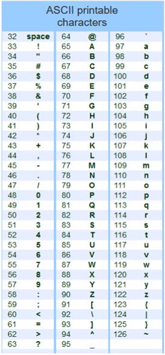

chr() and ord() FunctionsPython provides two built-in functions, chr() and ord(), which are closely related to the ASCII table. These functions are used to convert between ASCII codes and their corresponding characters.
The ASCII table is a character-encoding scheme that maps unique numbers (ASCII codes) to characters. It was originally designed to represent text in computers and other devices that use text. The ASCII table includes a total of 128 characters, ranging from 0 to 127.
chr() FunctionThe chr() function in Python takes an integer (representing an ASCII code) and returns the corresponding character.
# Convert ASCII code to character
print(chr(65)) # Output: 'A'
print(chr(97)) # Output: 'a'
In these examples, chr(65) returns the character 'A' since 65 is the ASCII code for 'A'. Similarly, chr(97) returns 'a'.
ord() FunctionThe ord() function takes a character and returns its ASCII code.
# Convert character to ASCII code
print(ord('A')) # Output: 65
print(ord('a')) # Output: 97
Here, ord('A') returns 65 and ord('a') returns 97, which are the ASCII codes for 'A' and 'a', respectively.
The chr() and ord() functions are inverses of each other. Using ord() on a character and then chr() on the resulting ASCII code will return the original character, and vice versa.
char = 'Z'
ascii_code = ord(char)
print(chr(ascii_code)) # Output: 'Z'

Using table above, convert the following string (encoded in decimal) to text:
72 101 108 108 111 44 32 109 121 32 110 97 109 101 32 105 115 32 87 97 108 100 111 33
Using table above, convert the following string to decimal ASCII code:
You won 100$!
Convert the following string (encoded in hex) to text (use the more comprehensive ASCII table on the course website):
43 6f 6e 67 72 61 74 75 6c 61 74 69 6f 6e 73 21 20 59 6f 75 20 67 6f 74 20 74 68 69 73 20 72 69 67 68 74 21
In cryptography, a Caesar cipher (or shift), is one of the simplest and most widely known encryption techniques. For example, a shift of 4 of all ASCII characters, would mean that an 'A' becomes a 'E', a 'B' becomes a 'F', etc (similarly '(' becomes ',').
Using the ASCII code table provided above, consider the following encoded message 'UkqCkpEp'.
Write a Python script to decode this message and display it to the screen. What is the message?